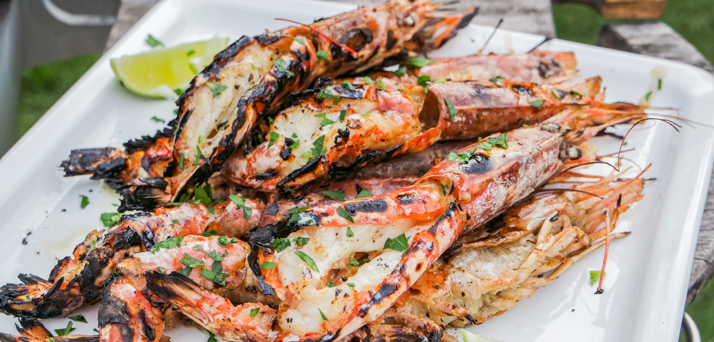
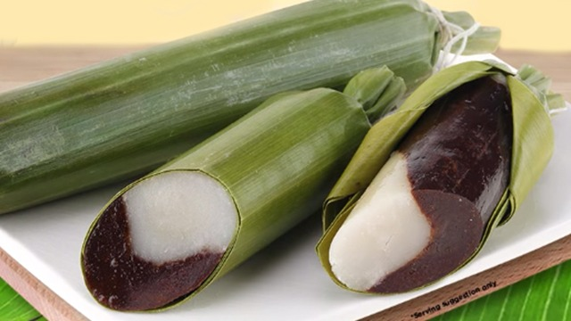
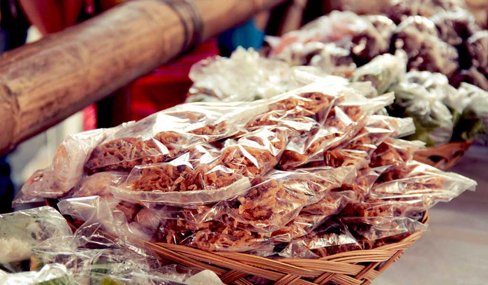

Leyte’s seafood is known for its freshness, often sourced daily from nearby coastal waters.
Kinilaw is a popular dish made from raw fish marinated in vinegar and spices.
Grilled seafood (inihaw) is commonly served with rice and dipping sauces.
Surrounded by rich coastal waters, Leyte is a haven for fresh and flavorful seafood dishes that highlight the simplicity and richness of Filipino coastal cuisine. From grilled fish to savory soups, the province offers a wide variety of seafood experiences that are both satisfying and deeply connected to local traditions

Seafood dishes in Leyte are known for their freshness and straightforward preparation, allowing the natural flavors of the ingredients to shine. Popular choices include grilled fish (inihaw), shrimp, crabs, and shellfish, often seasoned lightly with salt, spices, and local herbs. Coastal communities and markets ensure a steady supply of freshly caught seafood, making it a staple in everyday meals as well as special gatherings.
One of the highlights of Leyte’s seafood culture is the variety of dishes prepared using traditional Filipino methods. Meals like Kinilaw (raw fish marinated in vinegar and spices) and hearty seafood soups offer a balance of tangy, savory, and refreshing flavors. Whether enjoyed at seaside eateries or local markets, seafood in Leyte provides an authentic taste of the region’s coastal lifestyle.
Leyte’s seafood is known for its freshness, often sourced daily from nearby coastal waters.
Kinilaw is a popular dish made from raw fish marinated in vinegar and spices.
Grilled seafood (inihaw) is commonly served with rice and dipping sauces.

